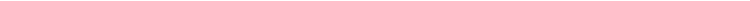

Ideas
Alphabets
Alphabets is a modular mechanical display for showcasing interactive messages. It’s a project I started in 2014 and have abandoned and picked up multiple times.

Night
Day & Night are the names of twoWhy two? Just another in a long list of promises I’ve broken.
automated Dobson Newtonian reflecting telescopes for tracking celestial bodies, capturing, and stacking images. They are identical, except one is white and the other black. Light and darkness, day and night.

Solo
Solo is the name of an accessory for SLR cameras that facilitates personal video recording by automating focusing and some camera movements.

Mirai 未来
Mirai is a portable microcomputer with a retro cyberdeck aesthetic that incorporates a mechanical keyboard. It aims to revive the nostalgia for analog devices and the design of the 80s through digital manufacturing.

Scylla Σκύλλα
Scylla isScylla was a creature from Greek mythology that tormented ships in the Strait of Messina.
a turbine-powered hydrofoil designed for recreational activities in seas or lakes.

Nest
Nest is not a dwelling, but you can live in it. It’s a life support module for temporary use, portable and aimed at the single-person market. Occasionally two ;-)

The Decision
Comparative Table
| Nest | Mirai | Scylla | Alphabets | Solo | Night | |
|---|---|---|---|---|---|---|
| Weeks^\dagger | 16 | 4 | 8 | 4 | 2 | 6 |
| Difficulty | 4/5^\dagger^\dagger | 2/5 | 4/5 | 2/5 | 2/5 | 3/5 |
| Versatility | 5/5 | 1/5 | 1/5 | 4/5 | 2/5 | 2/5 |
| Cost | 1k | 0.5k | 1k | 0.1k | 0.1k | 0.5k |
| Portability | Low | High | Medium | High | High | Medium |
^\dagger^\dagger Could reach 5/5 due to plumbing installations
Ikigai

The Verdict
I’m supposed to decide on one now. But I’m not going to. Instead, I’ll move forward with all the ongoing projects. To manage them simultaneously, I’ll move in small spirals. Some will fall by the wayside and only one will solidify as the final project.